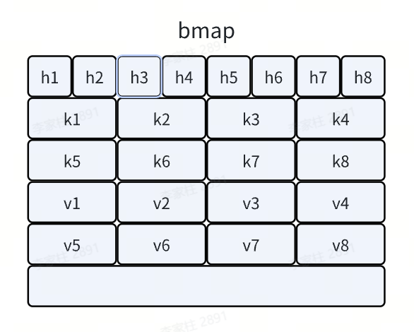
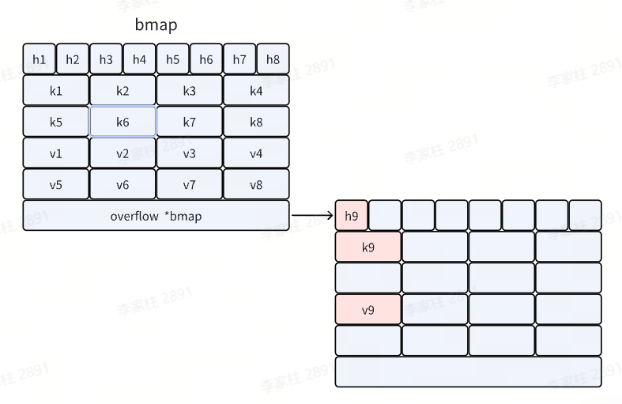
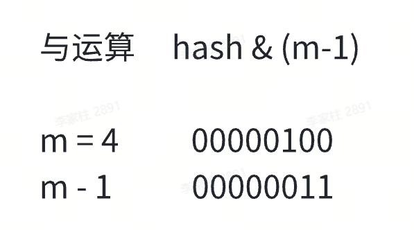
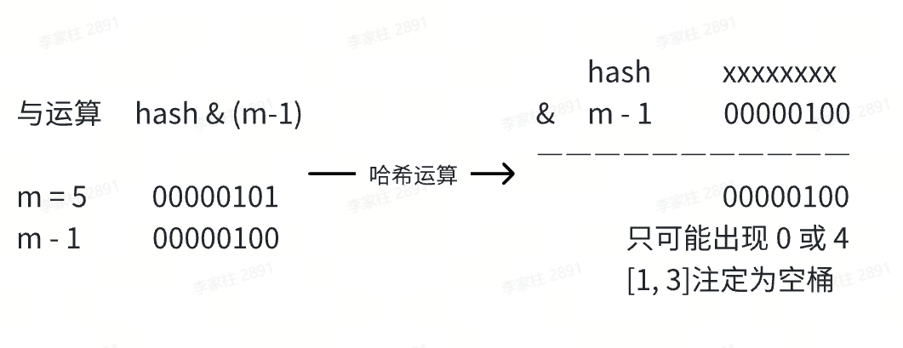
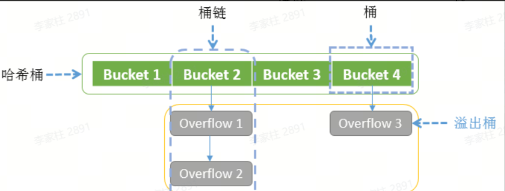
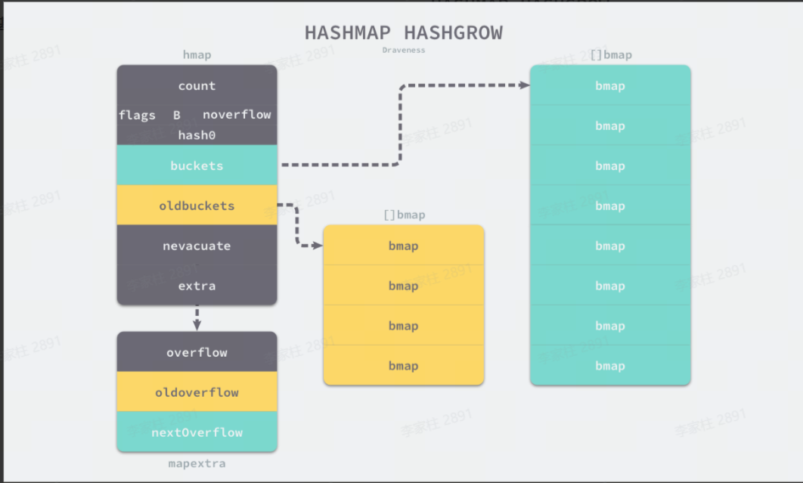
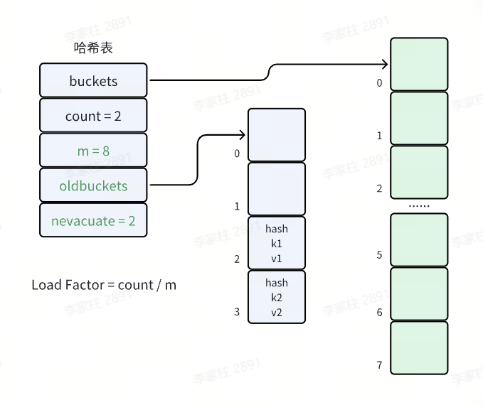
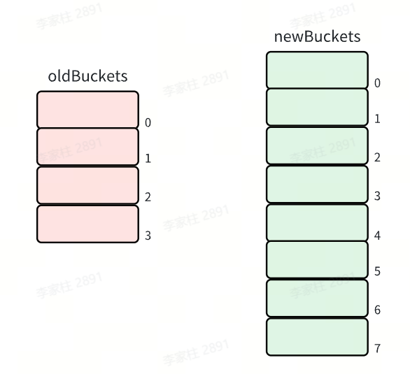
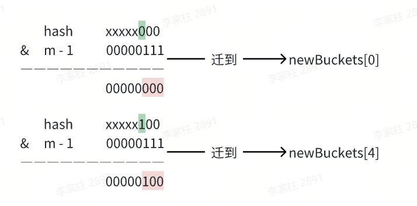
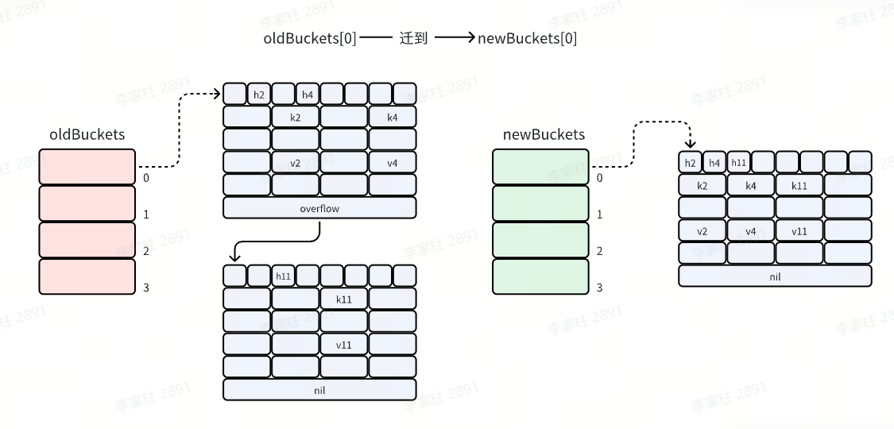

🧠 Map的定义
Map 是一种无序的键值对的集合。Map 最重要的作用是通过 key 来快速检索数据，key 类似于索引，指向数据的值。Map 是一种集合，所以我们可以像迭代数组和切片那样迭代它。不过，Map 是无序的，遍历 Map 时返回的键值对的顺序是不确定的。在获取 Map 的值时，如果键不存在，返回该类型的零值
特点
- 非并发安全，如果在不同 goroutine 并发读写同一个 map，会导致竞态问题甚至崩溃（运行时检测会 panic）并发读写需要并发安全的映射，可以加锁（使用
sync.Mutex）或者使用 Go 的并发安全容器（如sync.Map）。 - 迭代顺序是随机的，不保证顺序
- 键必须是可比较的类型
💡 面试要点：Map 的键类型有什么限制？
Go 语言中，map 的键必须是可比较的类型（comparable）。
可比较类型：
- 基本类型：
int、float、string、bool - 指针、
channel、interface - 结构体（如果所有字段都可比较）
- 数组（如果元素类型可比较）
不可比较类型：
slice、map、func
为什么有这个限制？
- map 的底层实现是哈希表，需要通过
==比较键是否相等 - 如果键不可比较，就无法判断两个键是否相同
示例：
|
|
📐 基本操作
📝 声明和初始化
-
声明映射：
var m map[string]int -
分配内存空间（初始化）：
make(map[KeyType]ValueType, initialCapacity)- map 的零值是 nil，不能直接赋值元素，必须用
make初始化
- map 的零值是 nil，不能直接赋值元素，必须用
-
使用字面量创建Map
1 2 3 4 5 6// 使用字面量创建 Map m := map[string]int{ "apple": 1, "banana": 2, "orange": 3, }
💡 面试要点：map 的容量可以指定吗？
可以，使用 make 时指定初始容量可以减少扩容次数，提高性能。
|
|
建议：
- 如果知道大概的元素数量，建议指定容量
- 避免频繁扩容带来的性能开销
💡 面试要点：Map 的性能优化建议
-
预分配容量
- 如果知道大概的元素数量，使用
make(map[K]V, hint)预分配 - 避免频繁扩容带来的性能开销
- 如果知道大概的元素数量，使用
-
避免大 value 类型
- map 的 value 存储在桶中，大 value 会增加内存占用
- 考虑使用指针类型：
map[K]*V
-
合理使用 delete
- 删除元素不会缩容，如果大量删除后内存占用高，考虑重建 map
-
并发场景选择合适的方案
- 读多写少：使用
sync.Map - 写多读少：使用
map + sync.RWMutex
- 读多写少：使用
性能对比示例：
|
|
🔍 获取和修改元素
-
获取元素（通过键来获取值）
1 2v1 := m["apple"] v2, ok := m["pear"] // 如果键不存在，ok 的值为 false，v2 的值为该类型的零值 -
修改/插入元素：
m["apple"] = 5 -
获取长度：
func len(var map) int
💡 面试要点：如何判断 map 中是否存在某个 key？
使用双返回值的方式：
|
|
🔁 遍历map
使用range循环来遍历map，返回键k和值v
|
|
- Go 中遍历 map 的顺序是不确定的，每次运行可能会不同。
🗺️ 嵌套Map
Map 的值可以是另一个 Map，这样就形成了嵌套结构：
|
|
运行结果：
|
|
📤 Map作为函数参数
Map 是引用类型，作为函数参数时传递的是底层指针的拷贝：
|
|
💡 面试要点：为什么 Go map 的遍历顺序是随机的？
1. 设计原因
- 避免依赖顺序：防止开发者依赖遍历顺序，提高代码可移植性
- 哈希表的天然特性：哈希表本身就是无序的
- 安全性考虑：避免攻击者利用顺序性进行攻击
2. 实现原理
Go 在遍历 map 时会：
- 随机选择一个起始桶
- 随机选择桶内的起始位置
- 每次遍历的顺序都可能不同
代码示例：
|
|
输出示例：
|
|
3. 如果需要有序遍历怎么办？
先将 key 排序，再按顺序遍历：
|
|
🗑️ 删除元素
func delete(m map[Type]Type, key Type)：从 map 中删除键值对- 删除不存在的键：不会报错
- nil map 上使用
delete：不会panic只是无效操作 - 删除 key 操作只是将对应的 key-value 对标记为空，但不会释放桶（不会释放内存），也不会触发缩容
💡 面试要点：删除 map 中的元素会缩容吗？
不会缩容。删除元素只是标记为空，不会释放桶的内存，也不会触发缩容。
原因：
- 缩容需要重新分配内存和迁移数据，成本较高
- 删除操作频繁时，缩容会导致性能下降
- 如果需要释放内存，只能创建新的 map 并复制需要的元素
⚠️ 踩坑实录
💥 直接操作nil map，发生panic
问题：直接操作未初始化的map，会触发panic
|
|
解决方法：使用map前，需对map进行初始化。
|
|
🔢 float 类型作为 key 的问题
问题：float 类型可以作为 map 的 key 吗？
回答：
可以，但不推荐。
原因：
- float 类型存在精度问题，
NaN不等于自身 - 计算哈希时可能出现不稳定的结果
- 可能导致查找失败
示例：
|
|
📋 map 的 value 为切片的问题
问题：map 的 value 可以是切片吗？
回答：
可以，但需要注意初始化。
示例：
|
|
⚡ 并发读写 map 导致 panic
问题：并发读写 map 会导致什么问题？
回答：
Go map 不是并发安全的。并发读写会导致 panic: concurrent map read and map write 或 panic: concurrent map writes。
原因：
- Go runtime 会检测并发访问，发现冲突时直接 panic
- 这是一种快速失败（fail-fast）机制，避免数据竞争导致的不确定行为
解决方案：
|
|
🔬 底层原理
🪣 数据结构与内存布局
在 Go 语言中，map 类型的底层实现就是哈希表，map 类型的变量 本质上是一个指针 *hmap ，指向 hmap 结构体。
- Go map 的底层是一个
buckets数组 - 数组的每个元素都是一个桶（bucket）
- 每个桶可以存储 8 个 kv，当桶满时，会创建溢出桶
|
|
Go 使用桶（bucket）存储 kv 信息，对应的数据结构是 bmap
|
|

提示
为什么设置为8个k-v键值对
8 个键值对的大小正好接近 CPU 的缓存行大小（通常是 64 字节），可以一次将整个桶加载到 CPU 缓存中，减少了 CPU 缓存未命中的概率，提升了访问性能
💡 面试要点：Go map 的底层实现原理
Go map 的底层实现是哈希表，核心数据结构是 hmap（hash map 的缩写），主要包含以下关键字段：
count：当前 map 中元素的数量B：桶数量的对数，桶数量为 $2^B$buckets：指向桶数组的指针oldbuckets：扩容时指向旧桶数组的指针hash0：哈希种子，增加哈希的随机性
每个桶（bmap）可以存储 8 个键值对，包含：
tophash：存储哈希值的高 8 位，用于快速定位keys和values：存储键值对overflow：指向溢出桶的指针
最后是一个 bmap 型指针，指向一个溢出桶，溢出桶的内存布局与常规桶相同，是为了减少扩容次数而引入的。当一个桶存满了，还有可用的溢出桶时，就会在桶后面链一个溢出桶，继续往溢出桶里面存。

实际上如果哈希表要分配的桶的数目大于 $2^4$，就认为使用到溢出桶的几率较大，就会预分配 $2^{B-4}$ 个溢出桶备用，这些溢出桶与常规桶在内存中是连续的，只是前 $2^B$ 个用作常规桶，后面的用作溢出桶。
🏗️ Go map 的整体结构图
Go 运行时里的 map 本质上是一个指向 hmap 的指针，而 hmap 管理整张哈希表，真正存储数据的是桶数组和溢出桶链。

📦 mapextra 与预分配溢出桶
除了 hmap 和 bmap，运行时里还有一个很容易被忽略的结构：mapextra。它主要负责维护溢出桶，尤其是 key/value 不含指针时，运行时会把溢出桶集中挂在这里，避免 GC 扫描遗漏。
|
|
overflow：当前桶数组使用到的溢出桶oldoverflow：扩容期间旧桶数组对应的溢出桶nextOverflow：预分配但尚未使用的下一个溢出桶
这也是为什么 Go map 在发生冲突时，并不总是现场申请一个新桶，而是可能直接复用已经预留好的溢出桶。
🎯 tophash 与桶内布局补充
Go 对每个 key 算出 hash 后，并不会一次性把整个 hash 都拿来比较，而是拆成两部分使用：
- 低位用于定位桶
- 高 8 位用于桶内快速过滤，也就是
tophash

每个 bmap 会先连续存储 8 个 key，再连续存储 8 个 value，而不是 key/value 交替排列。这样可以减少内存对齐带来的浪费。
🎯 哈希定位与冲突处理
类似于 Java 的 HashMap，参考往期博客 map 的哈希方法采用 与运算： hash & (m-1) 来定位哈希桶
需要注意的是，与运算方法如果想确保运算结果落在区间 [0, m-1] 而不会出现空桶，就要限制桶的个数 m 必须是 2 的整数次幂。这样 m 的二进制表示一定只有一位为 1，并且 m-1 的二进制表示一定是低于这一位的所有位均为 1。如果桶的数目不是 2 的整数次幂，就有可能出现有些桶绝对不会被选中的情况。


哈希定位过程
- Go 通过哈希函数，将 key 转成 hash（uint64）
- 桶的位置：
bucketIndex = hash & (2^B - 1)，等价于hash & mask - 桶内位置：使用 hash 的高 8 位（tophash）在桶内快速查找匹配的 key
这里的两个术语可以顺手说明一下：
- hash 值：指 key 经过运行时哈希函数计算后的结果。这个值不会被整体直接拿来当桶下标，而是拆开使用。
- 掩码（mask）：指定位桶位置时使用的那个值，通常就是
2^B - 1。
其中：
- hash 的低位配合掩码来定位桶；
- hash 的高 8 位会放入
tophash，用于桶内快速过滤。
例如当 B = 3 时，桶数量是 2^3 = 8，那么掩码就是 8 - 1 = 7，二进制写成 111。这时：
|
|
结果是 6，说明这个 key 会落到第 6 号桶。也可以把它理解成：掩码的作用就是把 hash 的低 B 位“抠出来”，用于快速计算桶下标。
💡 面试要点：哈希定位过程
-
为什么桶的个数必须是 2 的整数次幂？
- 使用与运算
hash & (m-1)定位桶，要求 m 必须是 2 的幂 - 这样 m-1 的二进制表示是低位全 1，确保哈希值能均匀分布到所有桶
- 如果不是 2 的幂，会出现某些桶永远不会被选中的情况
- 使用与运算
-
哈希定位的完整流程：
- 通过哈希函数计算 key 的哈希值（uint64）
- 使用低 B 位定位桶：
bucketIndex = hash & (2^B - 1) - 使用高 8 位（tophash）在桶内快速查找匹配的 key
🔗 Go 为什么选拉链法，而不是开放地址法？
在理解 Go map 的实现前，先看两种经典的哈希冲突处理方案。
1. 拉链法
拉链法的核心思想是：桶数组负责定位，冲突的数据通过额外结构串起来。传统实现常见的是“数组 + 链表”，而 Go 做了优化，不是一个节点只放一个键值对，而是一个桶里先放 8 个键值对，桶满了再通过 overflow 指针挂溢出桶。

2. 开放地址法
开放地址法不再额外挂链，而是把元素都直接放在数组里。遇到冲突时，不断向后探测空槽位，直到找到可插入的位置。
|
|

**Go 最终选择的是“桶 + 溢出桶”的变种拉链法。**这样既能把冲突控制在桶和溢出桶链上，又能兼顾缓存友好性和扩容迁移效率。
⚔️ 哈希冲突
Go map 与 Java HashMap 类似，同样使用拉链法

冲突解决策略
- 当桶满时，会创建溢出桶（overflow bucket）
- 查找时会依次遍历链表上的所有桶
- 为了避免链表过长导致性能下降，当链表太长时会触发扩容
💡 面试要点：哈希冲突解决
Go map 使用拉链法解决哈希冲突：
- 当桶满时，创建溢出桶（overflow bucket）
- 查找时依次遍历链表上的所有桶
- 为了避免链表过长导致性能下降，当链表太长时会触发扩容
📈 扩容与迁移
🚀 扩容的触发条件
- 负载因子超过 6.5 时，触发 翻倍扩容（kv 数量 / 桶的数量 > 6.5 时，桶的数量翻倍）
- 溢出桶过多时，触发 等量扩容（溢出桶过多，分布不均浪费内存，重建 map）
扩容期间的操作处理
- 读操作：检查新旧桶，不触发迁移
- 新增操作：触发迁移，在新桶中写入
- 更新操作：触发迁移，确保目标桶已迁移后，在新桶更新数据
- 删除操作：检查新旧桶，不触发迁移
🔄 渐进式迁移

hmap 的源码如下
|
|
在哈希表扩容时，先分配足够多的新桶，然后用一个字段记录 “旧桶” 的位置 oldbuckets ，再增加一个字段记录 “旧桶” 的迁移进度，例如记录下一个要迁移的 “旧桶” 编号 nevacuate 。

在哈希表每次读写操作时，如果检测到当前处于扩容阶段，就完成一部分键值对的迁移任务，直到所有的 “旧桶” 迁移完成，“旧桶” 不再使用才算真正完成了一次哈希表的扩容。把键值对迁移的时间分摊到多次哈希表操作中的方式，就是 “渐进式扩容” 了，可以避免一次性扩容带来的性能瞬时抖动。
✨ 翻倍扩容
当负载因子大于 6.5，即 map 元素个数 / 桶个数 > 6.5 时，就会触发翻倍扩容

|
|
bucketCnt= 8，一个桶可以装的最大元素个数loadFactor= 6.5，负载因子，平均每个桶的元素个数bucketShift(B)：桶的个数
此时，buckets 就会指向刚分配出来的新桶，而 oldbuckets 则会指向旧桶，并且 nevacuate 为 0，标识接下来要迁移编号为 0 的旧桶，每个旧桶的键值对都会分流到新桶中。
同时这里体现出桶的个数设置为2的n次方的优点，当 Map 扩容时，通过容量为 2 的 n 次方，扩容时只需通过简单的位运算判断是否需要迁移，这减少了重新计算哈希值的开销，提升了重新哈希的效率。
例如，旧桶的数量为 4，那么翻倍扩容后新桶的数量就为 8。

不需要每个 bucket 重新 hash 算下标。因为元素的新位置只与高位有关
此时迁移桶只要判断原来的 hash 拓展后新增的位是 0 还是 1

若为 0 则保持在原来的位置（hash 1 保持为 0）
若为 1 则被移动到原来的位置加上旧数组长度的地方（hash 2 被移动到 0+4=4 处）
🔃 等量扩容
如果负载因子没有超标，但是使用的溢出桶较多，也会触发扩容：
- 当常规桶数量不大于 $2^{15}$ 时（B <= 15），此时如果溢出桶总数 >= 常规桶总数（
noverflow>= $2^B$），则认为溢出桶过多，就会触发等量扩容。 - 当常规桶数量大于 $2^{15}$ 时（B > 15），此时直接与 $2^{15}$ 比较，当溢出桶总数 >= $2^{15}$ 时（
noverflow>= $2^{15}$），即认为溢出桶太多了，也会触发等量扩容。

|
|
所谓等量扩容，就是创建和旧桶数量一样多的新桶，然后把原来的键值对迁移到新桶中。当有很多键值对被删除的时候，就有可能出现已经使用了很多溢出桶，但是负载因子仍没有超过上限值的情况。此时如果触发了等量扩容，则会分配等量的新桶。而旧桶的每一个桶则会迁移到对应的新桶中，迁移完后可以使每个键值对排列的更加紧凑，从而减少溢出桶的使用。

💡 面试要点：Map 扩容机制
-
为什么使用渐进式扩容？
- 避免一次性扩容导致的性能抖动
- 将迁移时间分摊到多次读写操作中
-
扩容期间的操作：
- 读操作：检查新旧桶
- 写操作：触发迁移后在新桶操作
- 删除操作：检查新旧桶
-
两种扩容方式的区别：
- 翻倍扩容：负载因子 > 6.5 时触发，桶数量翻倍
- 等量扩容：溢出桶过多时触发，桶数量不变，重新整理数据
⚙️ 常见操作的运行时行为
🔍 map 的访问原理
对 map 的读取，表面上只有两种写法：
|
|
这两种写法的返回形式不同，运行时走到的访问路径也不完全一样，但核心查找流程是一致的。
但运行时内部会做更多事情：
- 先判断 map 是否为
nil或元素数量是否为 0。 - 做一次 map 写检测。如果当前 map 正处于写状态，运行时会直接报
fatal error，避免读写并发把哈希表状态破坏掉。 - 计算 key 的哈希值和掩码，并用低位确定桶的位置。
- 如果当前 map 正在扩容，需要先判断目标桶是否已经迁移：
- 已迁移，就到新桶里找。
- 未迁移，就先到旧桶里找。
- 进入目标桶后，先用哈希值高 8 位的
tophash做一次快速过滤，再决定是否继续比较真正的 key。 - 遍历当前桶中的 8 个槽位：
tophash相同，就继续比较 key 本身。- key 也相同，就直接返回对应 value。
tophash不同，则继续看下一个槽位。- 如果遇到表示“后续为空”的状态位，可以直接提前结束查找，因为后面不可能再有这个 key。
- 当前桶没找到，就沿着
overflow指针继续遍历溢出桶，重复同样的查找过程。 - 全部找完仍未命中时，返回 value 类型的零值；双返回值形式下，
ok为false。
访问流程示意图：

这里有两个容易忽略的细节：
- 读操作虽然不会修改 map 的逻辑内容，但在扩容阶段，访问旧桶时依然可能顺手触发部分桶迁移。 这也是 Go 渐进式扩容的重要特征。
- 查找时并不是一上来就对每个 key 做完整比较，而是先看
tophash，只有高 8 位匹配时才继续比对真正的 key，这样可以明显降低桶内比较成本。
✍️ map 的赋值原理
赋值入口看起来很简单：
|
|
但运行时内部会依次完成这些动作：
- 检查 map 是否已初始化；对
nil map赋值会直接panic。 - 检查写标志位，避免并发写破坏哈希表状态。
- 计算哈希值，找到目标桶。
- 如果目标桶处于扩容区间，先触发该桶迁移。
- 在主桶和溢出桶里按
tophash -> key的顺序查找。 - 找到同 key 就覆盖 value；找不到且有空槽就插入；都满了就挂新的溢出桶。
补充了一个很适合面试时说的点：Go runtime 会维护一个写标志位 hashWriting。当一个 goroutine 正在写 map 时，另一个 goroutine 再写或者与读并发冲突，就可能触发：
|
|
所以 Go 的普通 map 从设计上就是非并发安全的。
🗑️ map 的删除原理
delete(m, key) 的行为比很多人想象得更“温和”：
- 删除不存在的 key，不报错。
- 对
nil map执行delete，合法但无效果。 - 删除元素后，不会立刻归还桶内内存。
运行时内部删除时，会把对应槽位标成空状态。常见的两个状态可以这样理解：
emptyOne：这个位置空了，但后面可能还有元素。emptyRest：从这个位置往后都可以视为没数据了，查找时可以提前结束。
删除动作对应的核心逻辑位于 runtime.mapdelete。在真正清空目标槽位之前，前置流程和访问、赋值类似，也会先做写检测、定位 bucket，并找到目标 key 所在的位置。
清空槽位时，运行时会把 tophash 状态向前收紧，核心代码类似下面这样：
|
|
这段逻辑的重点是：
- 找到目标 key 后，会先清掉该槽位对应的 key/value。
- 如果该槽位后面已经没有有效元素，就把当前位置从
emptyOne进一步收紧为emptyRest。 - 然后继续向前检查前一个槽位：
- 如果前一个槽位也只是普通空位
emptyOne，就继续把它推进成emptyRest； - 一旦遇到前面还有有效元素，就停止。
- 如果前一个槽位也只是普通空位
这样做的目的，是尽量把“后续已经没有元素”这个事实向前传播。因为在查找时，一旦碰到 emptyRest，运行时就可以直接停止继续扫描当前桶或这段连续槽位，避免无意义比较。
举个更直观的例子：
- 假设当前 map 的状态如第一张图所示。
overflow bucket 2后面没有继续挂新的溢出桶，或者后续溢出桶里已经没有数据。- 这时
overflow bucket 2中第2、3、6个位置是普通空槽，也就是emptyOne。

如果这时删除了 overflow bucket 1 中的 key2、key4，以及 overflow bucket 2 中的 key7，删除后的状态就会变成第二张图：

这个例子想说明的是：
- 删除 key 之后，运行时不会简单地只把当前位置标空就结束。
- 它会继续检查这个槽位后面是否还有有效元素。
- 如果确认后面已经没有元素，就会把当前位置以及前面一段连续的
emptyOne尽可能推进成emptyRest。
这样处理之后，后续查找一旦扫到这段 emptyRest，就能立刻判断“后面不可能再有数据”，不需要继续往后遍历溢出桶里的剩余槽位。
图例详解：按删除顺序看状态是怎么变化的
可以按 key2 -> key4 -> key7 这三个删除动作来理解这两张图。
第一次删除 key2
- 运行时先定位到
key2所在槽位，并把该位置清空。 - 但这时
key2后面通常还挂着别的有效元素，比如后续槽位里的key4，或者后面的溢出桶里还有key7。 - 所以这个位置虽然空了，但还不能直接认定“后面都没数据了”。
- 这时它更可能保持为
emptyOne，意思是：这里空了，但后面可能还有元素，查找还不能停。
第二次删除 key4
- 删除
key4后，运行时会继续判断key4后面是否还有有效元素。 - 如果这时后续溢出桶里仍然还有
key7，那么查找链路就还没断。 - 所以
key4这个位置也不能直接升级成emptyRest。 - 换句话说，前面虽然越来越空，但只要后面还存在有效元素，前面的空槽就只能算“普通空位”，不能算“尾部全空”。
第三次删除 key7
- 这是这个例子里最关键的一步，因为
key7已经位于后面那段有效元素的尾部。 - 当
key7被删掉后，运行时再往后看，发现后面已经没有任何有效元素了。 - 这时
key7所在位置就可以标成emptyRest。 - 接着，运行时会继续往前回看：
- 如果前一个槽位原本只是
emptyOne，但它后面现在也已经彻底没有有效元素了； - 那它也可以从
emptyOne进一步推进成emptyRest。
- 如果前一个槽位原本只是
- 于是就会出现一段连续空槽被“整体收紧”的效果。
这就是为什么源码里的删除逻辑不是“删完当前槽位就结束”，而是会继续向前扫描。它的目标不是只清空一个位置，而是尽可能把一段连续的普通空位压缩成“后续全空”的状态。
可以把这两个状态简单理解成：
emptyOne：这里空，但后面也许还有货。emptyRest：这里开始，后面整段都空了，可以直接停止查找。
这里再补关键结论：map 删除 key 采用的是标记为空的策略，不会立即释放对应内存。只有整个 map 不再被引用时，才由 GC 回收。 这也解释了为什么大量删除后，如果很在意内存占用，通常需要重建一个新的 map。
🔁 map 的遍历原理
Go 对 map 的遍历故意做成“无序”，不是副作用，而是设计目标。
运行时遍历依赖一个迭代器 hiter，它会记录：
- 当前遍历到哪个桶
- 从桶内哪个槽位开始
- 当前 map 是否处于扩容状态
- 当前桶对应的新旧桶信息
初始化迭代器时，运行时会做两次随机选择：
- 随机选一个起始桶
startBucket - 随机选一个桶内起始槽位
offset
这就是为什么同一个 map 多次 range，顺序也可能不同。这样做的好处有两个：
- 防止开发者错误依赖遍历顺序
- 扩容是渐进式的，元素位置本来就可能变化，无序更符合真实语义
如果在遍历期间遇到还没迁移完的旧桶，运行时会优先从旧桶中筛出本轮应该返回的那部分 key，再继续推进遍历。
💡 补充结论
map的冲突处理不是简单链表，而是“一个桶放 8 个 kv + overflow 桶链”。map扩容不是一次搬完，而是按访问逐步迁移。- 读操作在扩容期间也可能触发迁移，这一点很容易被忽略。
delete只是标空，不会立刻释放桶内内存。- 普通
map的并发读写会被运行时直接判定为致命错误。